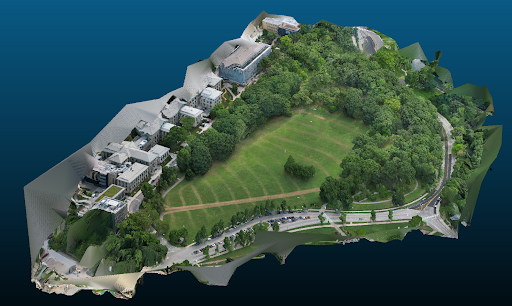
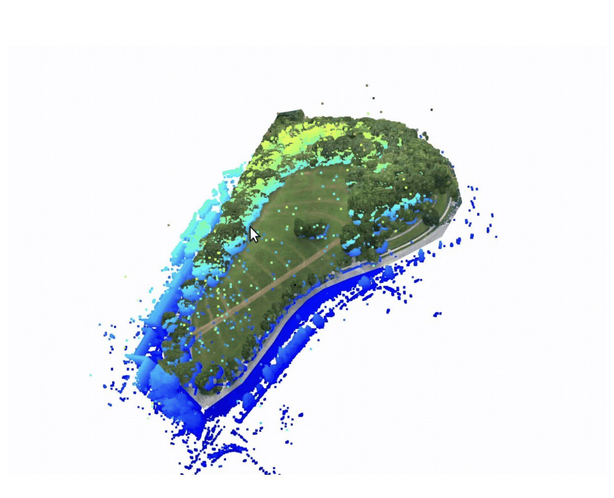

Extension: Map Merging
Under-canopy mapping and above-canopy mapping each capture only part of the forest structure. We merge both views to recover a comprehensive, multi-scale reconstruction that supports consistent geolocation and analysis across the full canopy profile.
- Goal: co-register UCM and ACM into a single aligned map.
- Impact: denser structure, fewer blind spots, and better forest-wide context.
- Outcome: a unified product that supports mapping, inspection, and GIS export.


